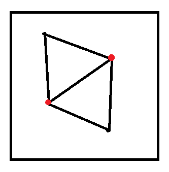
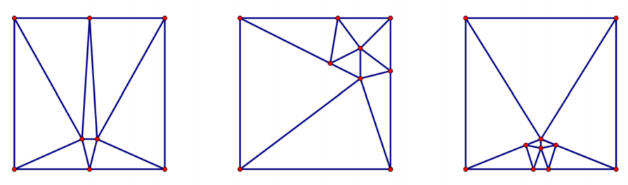

一个正方形，要求你将其切割为 个锐角三角形，输出切割方案，可能无解。
。
容易想到一个锐角三角形可以按三边中点连线切割成四个新的锐角三角形。也就是当 时有解就意味着 时有解。
问题转化为 时分别求最小的 使得问题有解并给出构造。
由于四个顶点都是直角，而要求三角形全部是锐角三角形，故每个顶点至少添加 条线段。
而对于非正方形顶点的点，有两种情况：
该点出现在一个三角形的边上（不含端点）或该点在正方形的边上。
那么这个三角形占了该点 的角，还剩下 。若该点还出现在另一个三角形的边上（不含端点），那么虽然合法，但是由于该点不是任何一个三角形的顶点，故该点没有研究意义。
故只需讨论剩下 分配给若干锐角的情况。
由于每个锐角都 ，故该点至少是 个锐角三角形的顶点。
该点没有出现在一个三角形的边上（不含端点）且该点也不在正方形的边上。
此时该点的 将分配给若干锐角，即至少是 个锐角三角形的顶点。
对于两种情况，记前者出现 次，后者出现 次。
考虑统计三角形的总顶点数，那么有 。 表示 个点都至少为 个三角形贡献顶点， 表示 个点至少为 个三角形贡献顶点。而 表示正方形的 个至少各贡献了 个顶点。而实际总贡献为 。
再考虑计算所有三角形的总内角和。首先由于有 个三角形，故总内角和为 。又第一种情况的点每个点贡献 ，第二种情况的点每个点贡献 ，正方形的四个顶点各贡献 ，故总度数为 。即 ，化简得 。
代入 并化简得 。即至少有两个第一类点。
而对于两个第一类点，每个点都有 个三角形，共 个。而至多有 个三角形重复（如下图），故至少有 个三角形，即 时无解。

时，按下图方式构造。

先计算 模 的余数，再构造解即可。
// 2023.02.04
#include <bits/stdc++.h>
using namespace std;
const int L=1000000000;
int k;
struct Point{
int x,y;
};
const Point LU={0,0},RU={0,L},LD={L,0},RD={L,L};
Point getMiddle(Point A,Point B){
return {(A.x+B.x)/2,(A.y+B.y)/2};
}
struct Triangle{
Point A,B,C;
}ans[51];
int total;
int main(){
srand(time(0));
scanf("%d",&k);
if(k<8)return printf("No\n"),0;
printf("Yes\n");
switch(k%3){
case 0: {
Point A={int(L*0.35),int(L*0.8)},
B={int(L*0.28),int(L*0.64)},
C={0,int(L*0.7)},D={int(L*0.3),L},
O={int(L*0.175),int(L*0.84)};
ans[++total]={LU,LD,A};
ans[++total]={LD,RD,A};
ans[++total]={LU,B,C};
ans[++total]={RD,A,D};
ans[++total]={A,B,O};
ans[++total]={B,C,O};
ans[++total]={C,RU,O};
ans[++total]={RU,D,O};
ans[++total]={D,A,O};
break;
}
case 1: {
Point A={int(L*0.7),int(L*0.5)},
B={int(L*0.76),int(L*0.4)},
C={int(L*0.76),int(L*0.6)},
O={int(L*0.78),int(L*0.5)},
D={L,int(L*0.45)},E={L,int(L*0.55)};
ans[++total]={LU,RU,A};
ans[++total]={LU,LD,A};
ans[++total]={RU,RD,A};
ans[++total]={LD,B,D};
ans[++total]={RD,C,E};
ans[++total]={A,B,O};
ans[++total]={B,D,O};
ans[++total]={D,E,O};
ans[++total]={E,C,O};
ans[++total]={C,A,O};
break;
}
case 2: {
Point A={0,L/2},B={L,L/2},
C={int(L*0.85),int(L*0.48)},
D={int(L*0.85),int(L*0.52)};
ans[++total]={LU,LD,C};
ans[++total]={RU,RD,D};
ans[++total]={LD,B,C};
ans[++total]={RD,B,D};
ans[++total]={B,C,D};
ans[++total]={LU,A,C};
ans[++total]={RU,A,D};
ans[++total]={A,C,D};
break;
}
}
while(total<k){
int id=rand()%total+1;
Point A=ans[id].A,B=ans[id].B,C=ans[id].C,
X=getMiddle(A,B),
Y=getMiddle(B,C),
Z=getMiddle(C,A);
ans[id] ={A,Z,X};
ans[++total]={B,X,Y};
ans[++total]={C,Y,Z};
ans[++total]={X,Y,Z};
}
for(int i=1;i<=total;i++)
printf("%d %d %d %d %d %d\n",
ans[i].A.x,ans[i].A.y,ans[i].B.x,
ans[i].B.y,ans[i].C.x,ans[i].C.y);
return 0;
}